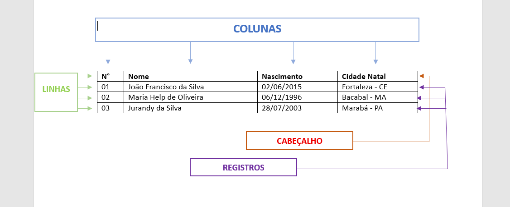
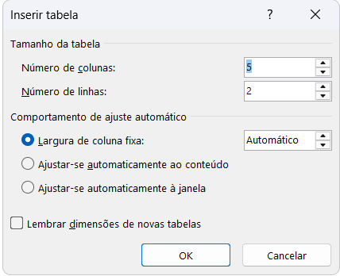

Aula 04: Tabelas no Word
1. Conceito Ampliado de Tabela

Uma tabela é uma estrutura bidimensional de informação (linhas e colunas) criada para ordenar, relacionar e tornar legível um conjunto de dados ou informações. Seu objetivo não é apenas armazenar dados, mas produzir sentido, permitindo comparação, classificação, síntese e análise.
2. Tabela como Ferramenta Cognitiva
- Reduz a carga cognitiva do leitor
- Organiza informações dispersas em padrões visuais
- Permite leitura não linear
- Facilita inferências rápidas e objetivas
A tabela funciona como um atalho mental entre o dado bruto e a compreensão.
3. Tabela como Sistema de Relações
Uma tabela expressa relações: comparação, hierarquia, correspondência e temporalidade. Cada linha responde ao “o quê” e cada coluna ao “sob qual aspecto”, modelando a realidade segundo critérios definidos pelo autor.
4. Estrutura Formal de uma Tabela

- Cabeçalhos: definem categorias e variáveis
- Corpo: onde os registros/dados são apresentados
- Organização lógica: alfabética, cronológica, crescente ou temática
A tabela constitui um micro-sistema de informação coerente e fechado.
5. Diferença Conceitual entre Tabela e Gráfico
A tabela é precisa, detalhada e analítica, respondendo à pergunta “quanto exatamente?”. O gráfico é sintético e interpretativo, respondendo “como isso se comporta?”.
6. Tabela como Instrumento Metodológico
- Organiza resultados
- Apoia a tomada de decisões
- Sustenta conclusões
- Permite verificação e auditoria
7. Tipos Conceituais de Tabelas
- Tabela descritiva
- Tabela comparativa
- Tabela classificatória
- Tabela cronológica
- Tabela sintética
- Tabela analítica
8. Definição Conceitual Final
Tabela é uma tecnologia intelectual de organização do conhecimento, que transforma dados ou informações dispersas em um sistema legível de relações, permitindo análise, comparação e tomada de decisão.
09. Inserindo uma Tabela Grande

Se você precisa criar uma tabela com muitas linhas e colunas, use a opção "Inserir Tabela":
- Clique na aba Inserir na barra de ferramentas.
- Clique em Tabela.
- Selecione Inserir Tabela.
- Uma caixa de diálogo aparecerá onde você pode especificar:
- Número de colunas: Digite quantas colunas você quer.
- Número de linhas: Digite quantas linhas você quer.
- Clique em OK para criar a tabela.
Esta é a forma mais rápida para criar tabelas grandes sem ter que desenhar célula por célula.
10. Adicionando Linhas e Colunas
Depois de criar uma tabela, você pode adicionar mais linhas e colunas conforme necessário:
Adicionando Linhas:
- Clique dentro da tabela em qualquer célula.
- Clique com o botão direito do mouse.
- Selecione Inserir > Linhas Abaixo ou Linhas Acima.
- Uma nova linha será adicionada no local selecionado.
- Ou apenas clique no botão de + que surge quando vc posiciona o ponteiro ao lado de cada linha.
Adicionando Colunas:
- Clique dentro da tabela em qualquer célula.
- Clique com o botão direito do mouse.
- Selecione Inserir > Colunas à Esquerda ou Colunas à Direita.
- Uma nova coluna será adicionada no local selecionado.
- Ou apenas clique no botão de + que surge quando vc posiciona o ponteiro sobre as linhas vertivais das colunas
11. Excluindo Linhas e Colunas
Se você cometeu um erro ou não precisa mais de uma linha ou coluna, pode excluí-la facilmente:
Excluindo Linhas:
- Clique em qualquer célula da linha que deseja deletar.
- Clique com o botão direito do mouse.
- Selecione Deletar > Deletar Linhas.
- A linha será removida da tabela.
- Ou clique em na aba Tabela Layout > Excluir > Excluir Linha
Excluindo Colunas:
- Clique em qualquer célula da coluna que deseja deletar.
- Clique com o botão direito do mouse.
- Selecione Deletar > Deletar Colunas.
- A coluna será removida da tabela.
- Ou clique em na aba Tabela Layout > Excluir > Excluir Coluna
Cuidado: ao deletar uma linha ou coluna, todos os dados nela contidos serão perdidos!